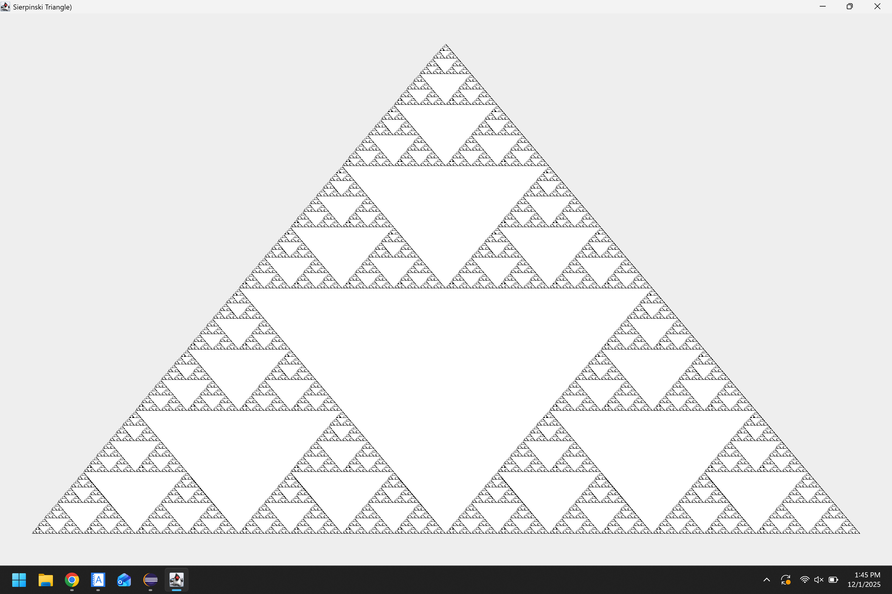
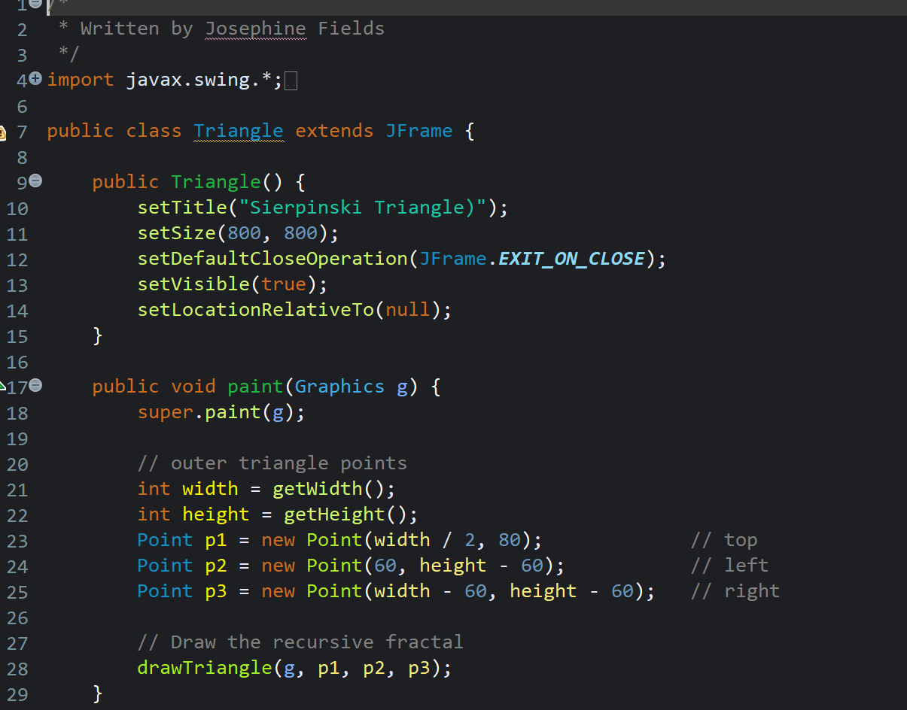
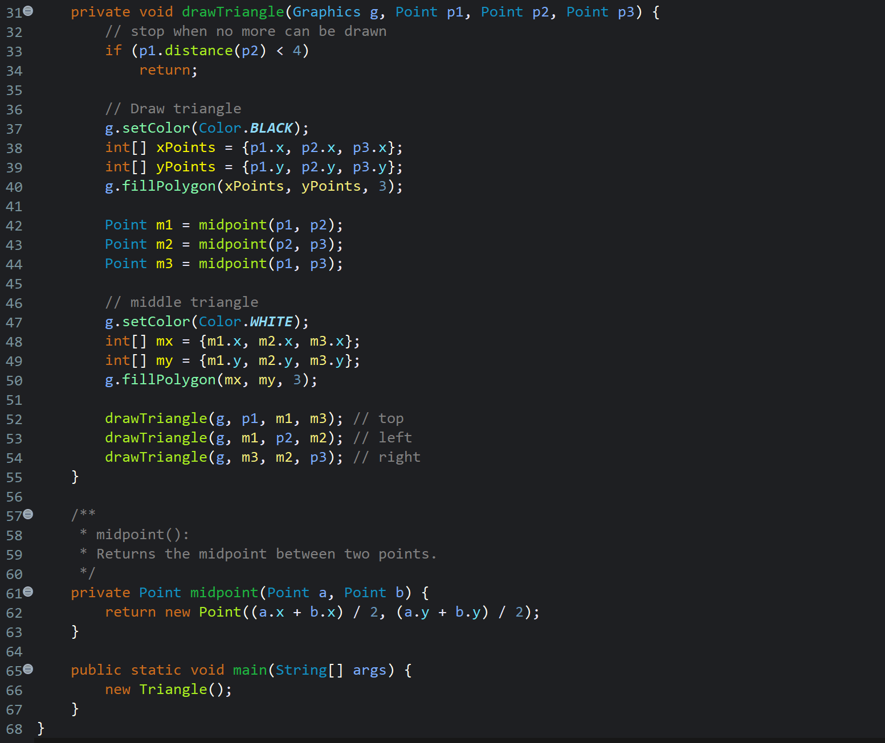

Sierpinski Triangle Simulator



An interactive Java-based simulator exploring recursive and algorithmic approaches to generating the Sierpinski Triangle. The project emphasizes performance, mathematical correctness, and visual clarity.
Design Process
- Defined constraints for recursion depth and rendering speed
- Implemented efficient triangle subdivision logic
- Optimized drawing routines for large iteration counts
- Refined visuals to clearly show fractal structure